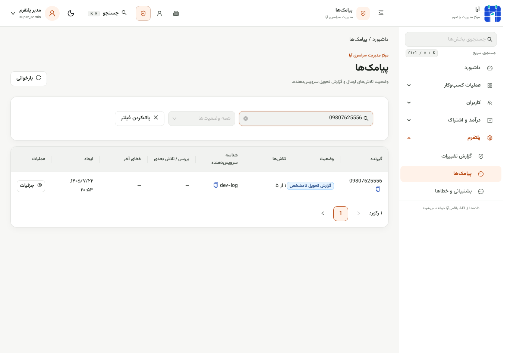
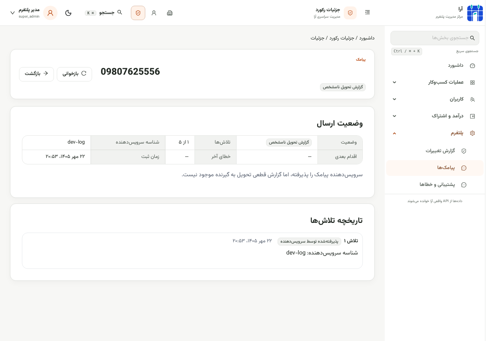
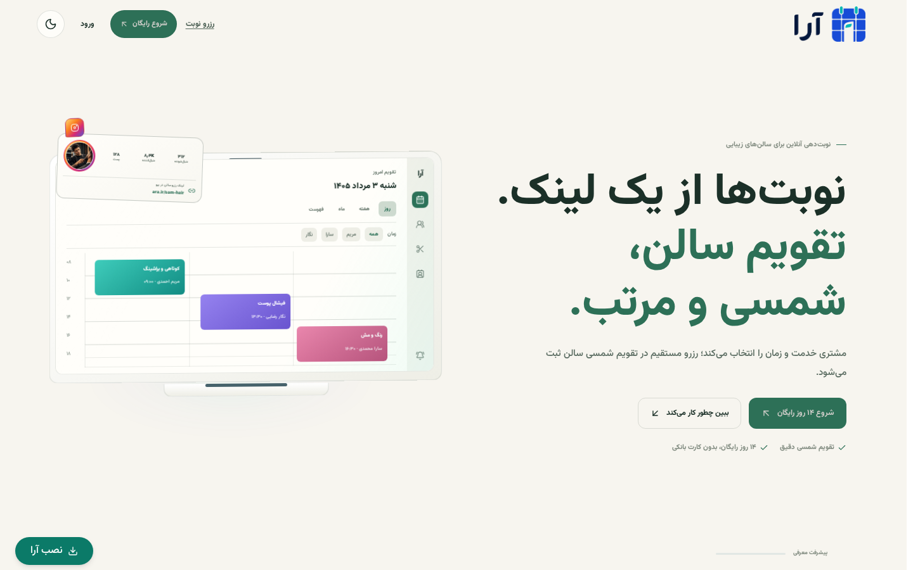
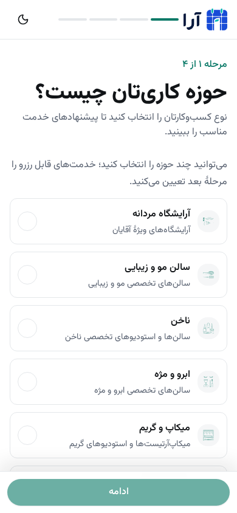
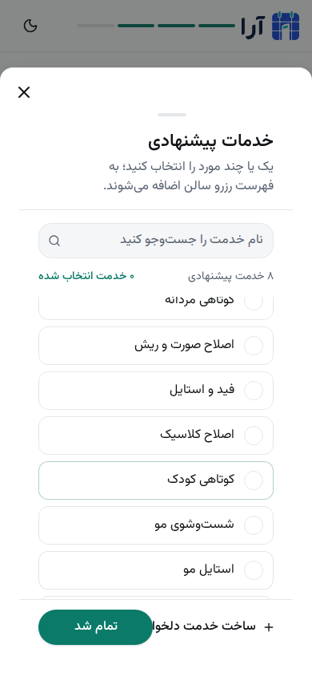
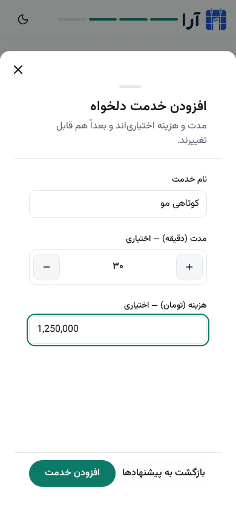
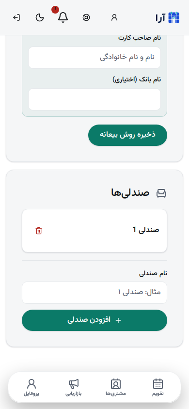

۱
پیگیری دقیق پیامک
ارسال ناموفق در ورکر تا ۵ بار تلاش میشود. پنل وضعیت، تعداد تلاش، زمان تلاش بعدی، خطا و تاریخچه را نشان میدهد.


خلاصهٔ تغییرهای انجامشده با تصویرهای واقعی از نسخهٔ آزمایشی برنامه.
ارسال ناموفق در ورکر تا ۵ بار تلاش میشود. پنل وضعیت، تعداد تلاش، زمان تلاش بعدی، خطا و تاریخچه را نشان میدهد.


پیام اصلی و اقدام بعدی در لندینگ واضحتر شده؛ متنهای توضیحی کوتاهترند تا انتخابها سریعتر فهمیده شوند.

اطلاعات تکراری حذف شده و مراحل به حوزهٔ کاری، مشخصات، خدمات و ورود محدود شدهاند. خدمت را میتوان بعداً هم کامل کرد.

گزینهٔ «آرایشگاه مردانه» انتخاب اول صفحهٔ حوزهٔ کاری است.
خدمتها در پنجرهٔ قابلاسکرول انتخاب میشوند؛ مدت با دکمههای کموزیاد و قیمت هم اختیاری است.

رقمها حین تایپ گروهبندی میشوند؛ قالب مشترک در قیمت خدمت، تنظیمات سالن و پنل مدیریت استفاده شده است.

اسکرول روی خود صفحه انجام میشود و هدر و نوبار در جای خود میمانند. بررسی موبایل بعد از اسکرول: ۱٬۱۷۶ پیکسل.

تمرکز الگوگیری: رزرو سریع، مراحل کوتاه، اقدام اصلی روشن و پنل کمازدحام.
تست پیامک: ارسال از ورکر و پنل آزمایشی با سرویس dev-log بررسی شد؛ وضعیت نمونه «پذیرفتهشده، تلاش ۱ از ۵» است. گزارش تحویل به گوشی در این سرویس موجود نیست و ارسال واقعی به اپراتور انجام نشد.